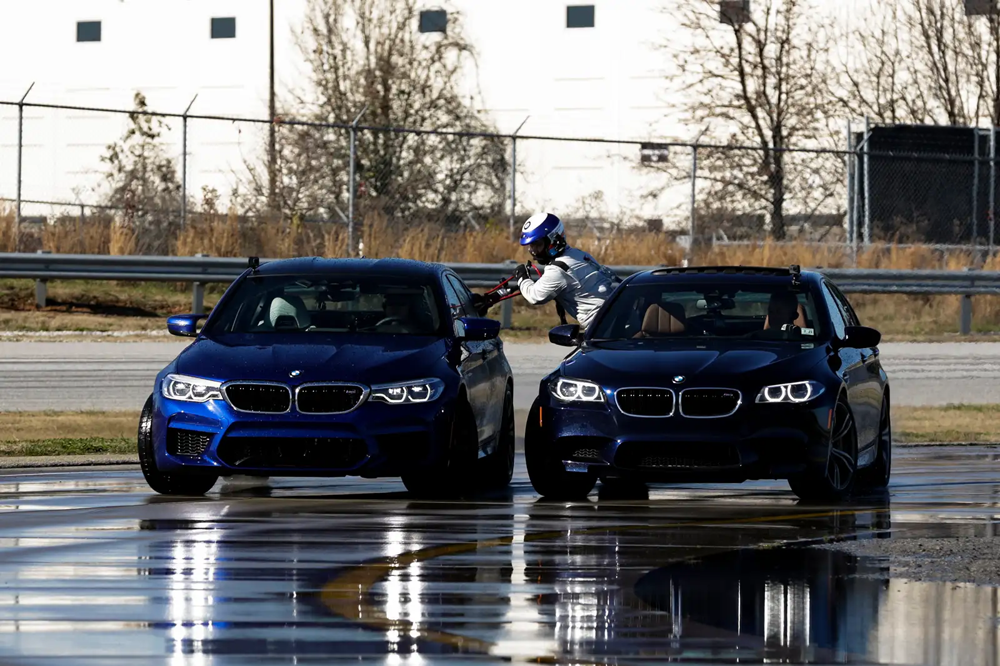
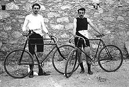

Presentation about sports
The fisrt F1
.jpg)
The first Formula One Grand Prix was the 1946 Turin Grand Prix. A number of Grand Prix racing organisations had laid out rules for a motor racing world championship before World War II, but due to the suspension of racing during the conflict, the World Drivers' Championship did not become formalised until 1947.
The longest drift
232.5 miles World's Longest Drift 🚘 BMW holds the Guinness world record for the longest. drift at a staggering 232.5 miles/ 374 km. Johan.
The fisrt race

Early history The first organized automobile competition, a reliability test in 1894 from Paris to Rouen, France, a distance of about 80 km (50 mi), was won with an average speed of 16.4 kph (10.2 mph). In 1895 the first true race was held, from Paris to Bordeaux, France, and back, a distance of 1,178 km.
The fisrt football
.jpg)
The early years Modern football originated in Britain in the 19th century. Since before medieval times, “folk football” games had been played in towns and villages according to local customs and with a minimum of rules.
The fisrt bike race
Paris, France The first bicycle race is popularly held to have been a 1,200 m (3,900 ft) race on the 31 May 1868 at the Parc de Saint-Cloud, Paris, France. It was won by expatriate Englishman James Moore who rode a wooden bicycle with solid rubber tires. The machine is now on display at the museum in Ely, Cambridgeshire, England.